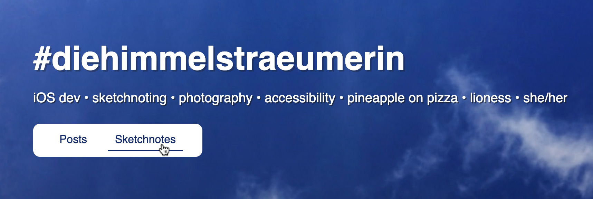
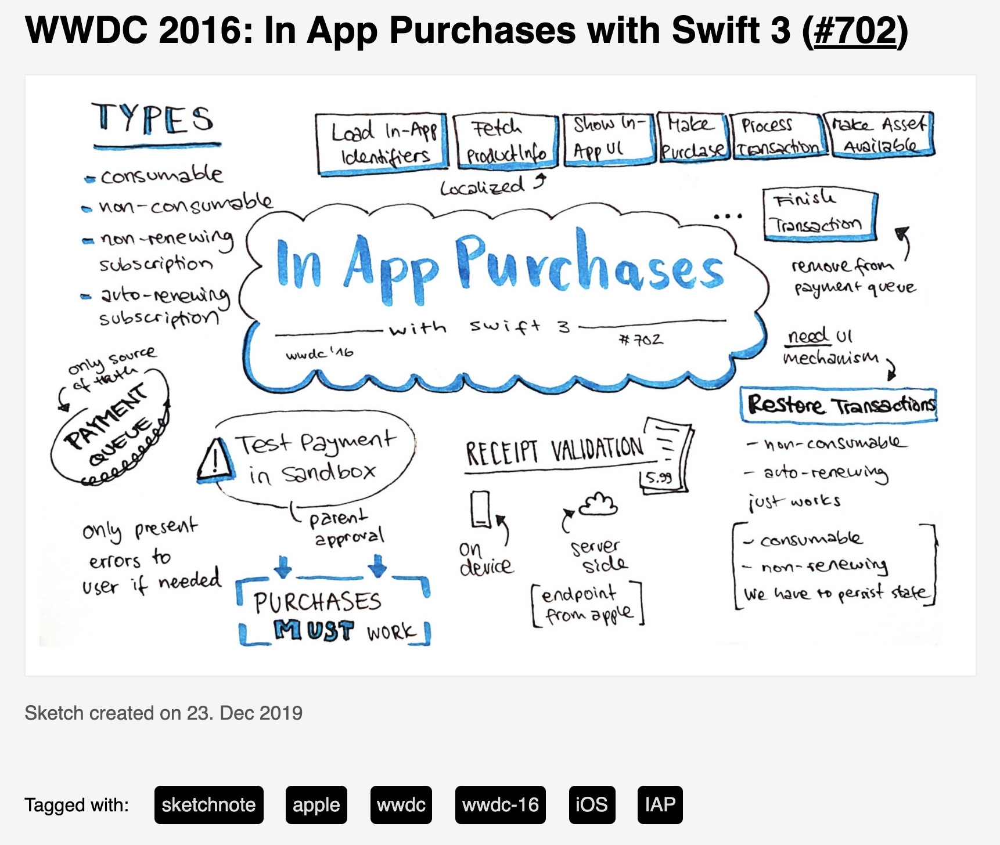

Mar 28, 2020 ⋅ 8 min read
Welcome, Sketchnotes!
Some years ago, a friend of me asked why I don't have my own website where I could host my content. To this time, I was mostly active on Instagram where I posted my photographs and on Twitter to post some things every now and then. To have my own website was something I've never thought of before. Why should I invest time to create a website, when mostly everyone uses platforms like Instagram or Twitter to consume content on a daily basis?
But after this conversation the first seed was planted. The more I thought about it, the more I've realised that I could have full control over the content I post on my website. I won't stop posting things on other platforms, but now I can refer to my website when I share content. Besides, it feels so awesome to have my own little place in the big world of internet, where everything which matters to me can be discovered. A place with things I've created and am proud of.
When I released this website in January 2020, I was a hundred percent sure, that I wanted to display my sketchnotes as well... but I needed more time to think about how to implement it and I was also unsure about how the layout and navigation should look like.
But three months later, I had a plan!
What was the plan? Which things needed to be done?
1) Navigation to access the sections
I needed a navigation bar to access the new section. That was one of the easier things, because I've already had some example in mind, which I could get inspired by.
It's a simple white rectangle with (currently) two sections "Posts" and "Sketchnotes". When you hover over one of the elements, you see a line under the text. This looks the same when the section is selected.
2) Preview of recent sketchnotes
On the first page of my website, you see the most recent items. I wanted to add my latest sketchnotes to this page. This is only a small part from the content of page /sketchnotes with the same design. So, let's jump directly to the list of all sketchnotes.
3) List of all sketchnotes
The page /sketchnotes should give an overview of all my sketchnotes. You should see a list of all sketchnotes which are displayed with smaller images as thumbnails.

To have a website which is performant and loads its content quickly without using your whole monthly mobile data, was very important to me.
Google gives a nice insight on why optimizing images is so important:
Images often account for most of the downloaded bytes on a page. As a result, optimizing images can often yield some of the largest byte savings and performance improvements: the fewer bytes the browser has to download, the less competition there is for the client's bandwidth and the faster the browser can download and render content on the screen.
(see the article: Optimize Images)
I created a script to easily generate thumbnails for the list. The script uses the power of ImageMagick to resize all images and to save the resized image as new file with a suffix -small. It has already saved me tons of hours with resizing images!
Creating the layout for the list was a challenge for me. Every sketchnote has different aspect ratios and they exist in both orientations, landscape and portrait. I wanted to display the latest sketchnotes on top of the screen, to be able to scroll down and see how the sketchnotes developed. Additionally, I wanted a CSS only solution, because I like to keep it simple whenever it's possible.
I'm a newbie when it comes to HTML and CSS, so I had to learn a lot about different HTML layout techniques. There are many different tutorials for photo grid layouts out there and I've tried different kinds, like CSS grid, flexbox and finally used a column layout, which worked best for me.
In the next image there are four layout variations. In each variation the numbers from 1 to 12 display the creation date of a sketchnote from new to old, which means sketchnote 1 is the latest and sketchnote 12 is the oldest. The blue lines display which side should have the same length for every image. I don't want to crop the sketchnotes in preview and images shouldn't be distorted (who would ever want this?!), one side – either height or width – needs to have a fix length for all images.

- (1) is what I actually wanted to achieve
- (2) is what I was able to achieve with grid layout
- (3) is what I was able to achieve with flexbox
- (4) is what I was able to achieve with column layout
Layout 4 is nearly the same as Layout 1 and is therefore nearly perfect. Only the order of the images isn't like I wanted. Nevertheless, I chose this layout to be the final one (for the moment).
EDIT: in November 2020, I changed the layout to flexbox layout for various reasons (see commit):
1) To fix order of sketchnotes in
/sketchnotes. The items are now displayed from top left to bottom right. To make this possible, every sketchnote has the same aspect ratio and is filled up with white space. 2) To remove weird visual effect when refreshing/sketchnotes. 3) To remove a bug with shadow and link in column-layout.
4) Detail of sketchnote
To layout the detail page of a sketchnote was easier to achieve than the list. The page consists of different elements, mainly one big image. As some sketchnotes are too high to see them complete directly without scrolling, I added a link on the image to open it in a new tab in full resolution. In the new tab, the browser navigation features can be used to zoom in and out.
The static HTML for this website is generated with Publish. To have as less manual work as possible when adding a new sketchnote, most of the HTML for the detail page is generated. This means, I add the content for the page in a markdown file, add some logic how the HTML should look like and Publish generates the HTML from the mix of content and logic.
A markdown file for a sketchnote detail page looks something like this:
---
date: 2020-03-28 20:50
description: Sketchnote about XYZ
tags: sketchnote, xyz
image: images/sketchnotes/sketchnote-xyz-small.jpg
---
## Sketchnote XYZ
I manually add information about:
- the date, when I created the sketchnote, which is used to sort the list of sketchnotes
- the description, which is also used as alt tag for the sketchnote
- tags, which can be used to find other sketchnotes
- the path to the thumbnail image*
- the title, which can't be generated from the image name
*I remove the part -small from the thumbnail image path to get the path to the original image and add a HTML structure around the full size image. This is done once in code and doesn't have to be adapted for other sketchnotes.
How do I add a new sketchnote?
- First of all, I add the sketchnote image with a "good" naming to the
/Resources/images/sketchnotes/folder. The naming is important because the name will also be used for the URL for the detail page.
- If the image isn't of type
.jpg, I can run a script to convert.pngto.jpgby runningmake convert-png. All tasks are defined in aMakefile, which was added to demonstrate which tasks can be run in the project and to easily run these tasks.
- The thumbnails for the list have to be created. Therefore I run the script, I've mentioned earlier, by running
make thumbs.
- I create a markdown file, where information about the content is added manually. I copy an existing file most of the time and name it like the image.*
- Run
maketo generate the new HTML code.
*EDIT: in November 2020, I added a script to generate markdown files with correct naming for all sketchnote images. This makes it even more easier. (see commit)
Next steps
I have thousand ideas what to do next and what to improve. My top three are:
- I think about adding the name of the speaker or author, because none of these sketchnotes could be created without a speaker or an author and I want to honor them. (EDIT: done in this commit)
- To display a bit more information about a sketchnote in the list, I want to display the title on hover. (EDIT: done in this commit)
- It would be great to improve dark mode for sketchnotes. Currently they are white images on a dark background. If anyone has an idea, please share it with me!
That's it! Feedback or comments are highly welcome! Leave a message in twitter.